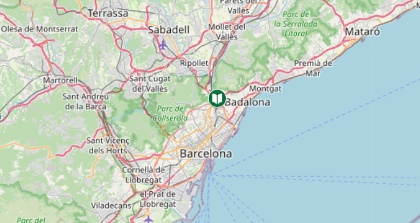

Libros, sólo libros, todos los libros, en cualquier formato. Fundada en 2022, La gran Librería es hoy la cadena de librerías líder en el sector. En 2022 se integra en el Grupo Planeta, en 2022 inauguró su librería virtual y en 2022 inicia una fase de expansión ubicándose en la mejor zona comercial de la principal ciudad de Barcelona. En la actualidad cuenta con 1 librería: en Ripollet, Barcelona. La gran Librería evoluciona reforzando su rica tradición librera. Es ante todo una librería de "fondo" con más de 15 referencias en su catálogo. Las señas de identidad originales la acompañan y se refuerzan con: Generalista: por la universalidad de los contenidos Especializada: por la preparación de sus empleados Moderna: por la constante atención a las últimas tecnologías Aglutinadora: por ser espacio de reflexión y encuentro Completa: por la amplitud de la oferta y personalización de servicios La gran Librería ofrece una variada gama de servicios entre los que destaca Pedidos Personalizados y la venta a organismos y bibliotecas. La amplitud y profundidad de su base de datos, se refleja en la edición periódica de catálogos especializados por materias y por la presencia en Internet de casadellibro.com, brindando información a los cinco continentes. La preparación de su único empleado constituye el complemento imprescindible a la cantidad, variedad y calidad de su oferta bibliográfica. El personal de La gran Librería es conocedor de los clásicos y últimas novedades en todos los campos. Gracias a ellos, Casa del Libro goza de gran reconocimiento entre lectores y agentes culturales.
La gran librería cuenta con 1 librería físicas repartida por la Península, y www.lagranlibrería.com donde podrás realizar tus pedidos y recibirlos en cualquier punto donde te encuentres, o recogerlos en nuestra librería. ¡Feliz lectura! Las librerías están situadas en Ripollet, Barcelona. Sus céntrica ubicacion y amplitud de horarios hacen que la librería sea puntos de encuentro de lectores, libreros, editores y escritores.
